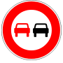

🚦 2.1 Clasificación de las señales
- Señales verticales: Fijas sobre postes o soportes. Se dividen en: peligro, reglamentación (prohibición, obligación, prioridad) e indicación.
- Señales horizontales: Marcas viales pintadas en el pavimento (líneas, flechas, cebreados).
- Semáforos: Regulan la circulación con luces de colores (rojo, amarillo, verde, intermitentes).
- Agentes de circulación: Sus indicaciones prevalecen sobre cualquier otra señal.
- Balizamiento y señales circunstanciales: Obras, desvíos, señales temporales.
🛑 2.2 Señales de reglamentación (con imágenes reales)

Zona de Estancia y Juego
Señal S-28. Velocidad máxima 10 km/h. Prioridad para peatones.

Ceda el paso
Triángulo invertido con borde rojo. Obligación de ceder el paso.

Prohibido vehículos de motor
Prohíbe la entrada a todo vehículo de motor.
Giro obligatorio a la derecha
Indica que hay que girar obligatoriamente a la derecha.
Estacionamiento
Indica zona de estacionamiento permitido.

Paso de peatones
Prioridad para los peatones.

'">Prohibido adelantar
Prohíbe adelantar a cualquier vehículo en ese tramo.

Prohibido el paso
Prohíbe la entrada a vehículos en ese sentido.

STOP
Detención obligatoria. Hay que parar completamente antes de continuar.

Prohibido paso a peatones
Prohíbe el paso a peatones.
⚠️ 2.3 Señales de peligro

Curva peligrosa izquierda
Advierte de una curva peligrosa hacia la izquierda.

Curva peligrosa derecha
Advierte de una curva peligrosa hacia la derecha.
🚗 2.4 Señales de velocidad máxima

Velocidad máxima 30 km/h
Límite de velocidad en zonas residenciales o escolares.

Velocidad máxima 50 km/h
Límite estándar en vías urbanas.

Velocidad máxima 90 km/h
Límite en carreteras convencionales.

Velocidad máxima 120 km/h
Límite en autopistas y autovías.
📏 2.5 Señales horizontales (marcas viales)
| Marca | Significado |
|---|---|
| Línea continua | Prohibido adelantar o cruzar sobre ella. Prohíbe el cambio de carril. |
| Línea discontinua | Permite adelantar o cambiar de carril si es seguro. |
| Línea continua con discontinua | La línea continua prohíbe adelantar desde ese lado, la discontinua lo permite. |
| Cebreado (líneas diagonales) | Zona de estacionamiento prohibido o área de seguridad. |
| Paso de peatones | Franjas blancas paralelas. Prioridad para los peatones. |
| Flechas de carril | Indican dirección obligatoria (recto, izquierda, derecha). |
| Línea amarilla continua (bordillo) | Prohibido estacionar y parar. |
| Línea amarilla discontinua (bordillo) | Prohibido estacionar, pero permite parar. |
🚥 2.6 Semáforos
- Rojo fijo: Detención obligatoria antes de la línea de detención. No se puede circular.
- Amarillo fijo: Precaución, prepararse para detenerse. Indica que va a cambiar a rojo.
- Verde fijo: Paso permitido con precaución.
- Amarillo intermitente: Precaución, prioridad de paso. Se encuentra en pasos a nivel o intersecciones peligrosas.
- Semáforo peatonal: Figura verde (puede pasar) y roja (no cruzar). En intermitente, finalización del paso.
- Semáforo con flecha verde: Permite el paso solo en la dirección de la flecha.
👮 2.7 Agentes de circulación
Las indicaciones de los agentes de tráfico prevalecen sobre cualquier otra señal. Sus gestos pueden ser:
- Brazo levantado verticalmente: Detención obligatoria para todos los vehículos.
- Brazo extendido horizontalmente: Prohibido el paso en la dirección que indica.
- Brazo moviéndose en círculo: Indicación de giro obligatorio.
- Brazo hacia abajo con la palma abierta: Disminuir la velocidad.